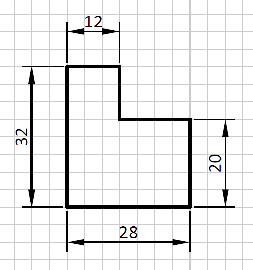

Acotación¶
Acotar es añadir al dibujo el tamaño que tiene el objeto real. Si un objeto tiene un tamaño de 20 milímetros, se representará esa cantidad en su dibujo.
{kind=link}

La cota está compuesta de varios elementos:
- Líneas auxiliares de cota: 2 segmentos perpendiculares a lo que se está midiendo, que determinan el comienzo y el final de la medida.
- Línea de cota y flechas: línea paralela a la dimensión a acotar, que mide lo mismo y comienza y termina en dos flechas de cota.
- Cifra de cota: número que indica el tamaño de la dimensión, en milímetros si no se especifica otra unidad.
Si el dibujo es más grande que el objeto (ampliación) o más pequeño (reducción), la acotación siempre tiene el mismo valor porque no depende del tamaño del dibujo. La acotación representa el tamaño del objeto real, no el tamaño del dibujo.
Ejercicios de acotación¶
A continuación se presenta una lámina con ejercicios de acotación de piezas. En la cara trasera de la lámina aparecen los ejercicios resueltos.